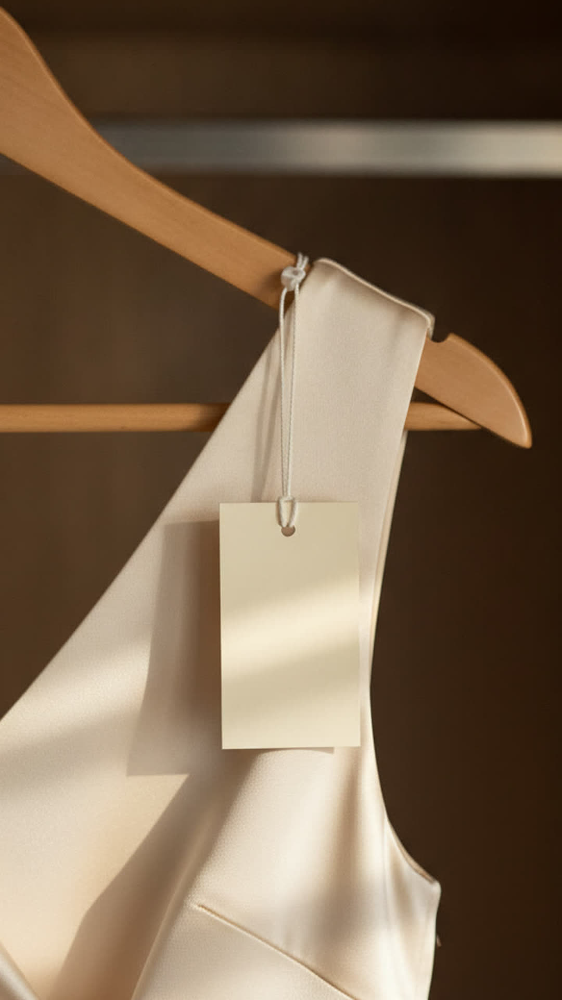
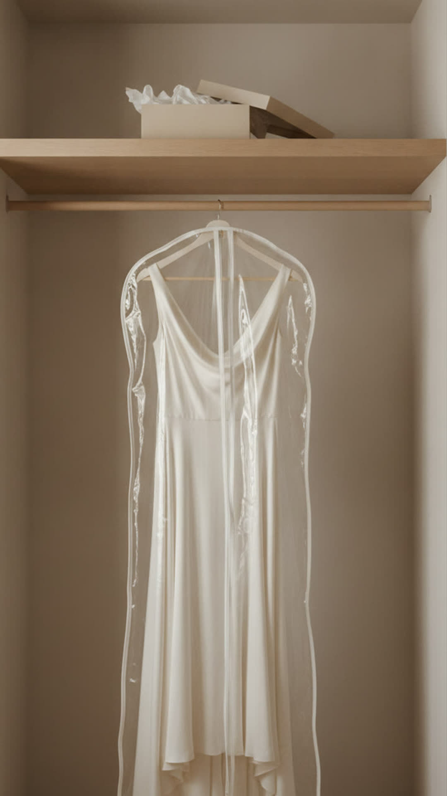
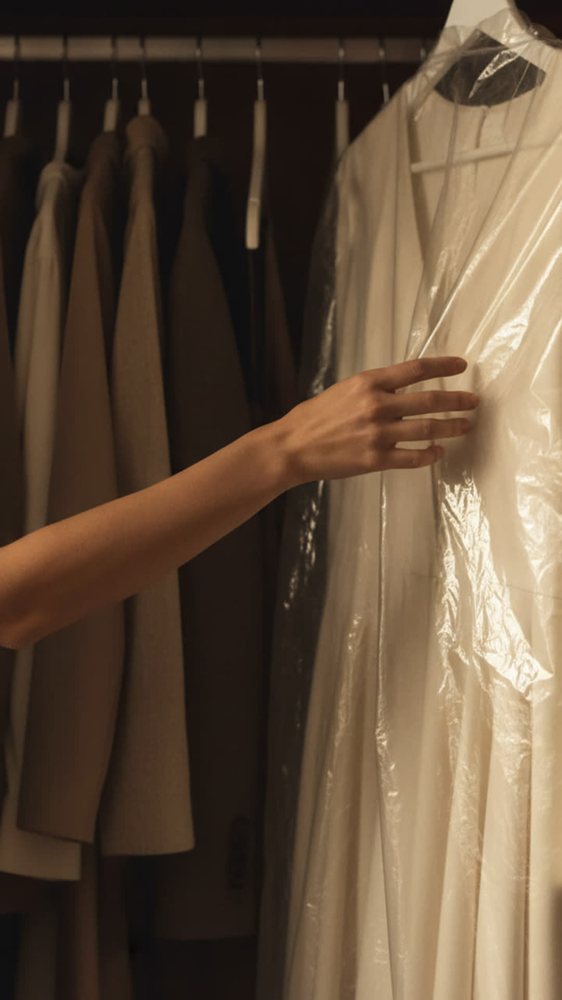

Five reasons the good thing stays in the wardrobe, said out loud and answered with the same two words. The last reason is the only one we can do anything about, and that is where the product turns up. Once, small, late.
Four of these frames have no person in them at all. They are the garment on its own, which is the point, because that is where it has been sitting. Every line is spoken and the same two words answer each one.
| The situation | Spoken | Why it sits here | |
|---|---|---|---|
| 01 | The tag is still on | Bought it in March. The tag is still on. Wear it. |
The trivial excuse, so it opens light. Everybody has one of these hanging up right now. |
| 02 | Worn once, to someone else's wedding | Worn once. To someone else's wedding. Wear it. |
The wedding one. Good enough for somebody else's day and nothing since. |
| 03 | Too good for a Tuesday | Too good for a Tuesday. Wear it. |
The real reason most good clothes stay in there. No ordinary day is ever big enough to spend them on. |
| 04 | Saving it for something | You are saving it for something. Wear it. |
Saving it for an occasion that keeps not arriving. The good one lives at the back, still in the dry cleaner plastic. |
| 05 | And what if you spill something | And what if you spill something. Wear it. |
The actual fear, and the only one on this list we can do anything about. This is the one frame the product appears in. Once, small, late. |
Then a beat, then the second line: don't save it for a special occasion. Nothing else on the frame.
Identical to the September film, deliberately. Beautiful, expensive, unhurried. If the two look like different campaigns then one of them is wrong.
Heels carried in the lift, brass taps, earrings at the mirror. Expensive, and everybody in it looks beautiful. That is the bar. The good clothes are treated as a character rather than a prop, the light does most of the work, and it holds every shot well past the point a reel normally cuts.
Reference frames so the idea is visible. The feel and the framing we are after, not shots to copy and not a cut. Nothing is written on the picture, the line under each frame is what is heard over it. How it moves is yours.


